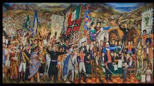
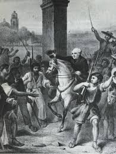

|
|
EL GRITO DE DOLORES( 16 de septiembre de 1810)En la madrugada del 16 de septiembre de 1810, tras una cabalgata frenética desde San Miguel el Grande, Ignacio Allende llegó a la casa cural de Dolores, despertando a Miguel Hidalgo y Costilla para informarle de la gravedad de la situación. Le contó detalladamente cómo las autoridades habían cateado la casa de los hermanos González en Querétaro, encontrando el arsenal completo, y cómo Josefa Ortiz de Domínguez había logrado burlar la vigilancia para enviar la advertencia que les salvaba la vida en ese instante. Ambos hombres comprendieron que la conspiración como organización secreta había dejado de existir, que las órdenes de captura ya estaban en camino y que cualquier demora significaba su captura inmediata, juicio por traición y muerte segura. En esa reunión de urgencia, que duró poco más de una hora, evaluaron las pocas opciones que les quedaban. La idea de huir fue descartada de inmediato, ya que sabían que las rutas estaban siendo vigiladas. La única alternativa viable era actuar, aunque ello significara lanzarse a la aventura sin tener lista la estructura militar ni las fuerzas coordinadas que habían planeado para octubre o diciembre. Hidalgo, confiando en la autoridad moral y el cariño que se había ganado en el pueblo durante sus años como párroco, propuso convocar a los feligreses esa misma madrugada. Su razonamiento fue que, si el pueblo se levantaba con ellos, las autoridades locales no tendrían capacidad para detenerlos y podrían iniciar la marcha hacia ciudades más grandes donde sumar más fuerzas. |
|---|
| Una vez tomada la decisión, Hidalgo se dirigió a la iglesia parroquial de Nuestra Señora de los Dolores, situada frente a la plaza principal. Era una hora avanzada de la madrugada, aproximadamente entre las cuatro y las cinco de la mañana, cuando el pueblo estaba en su mayor sueño profundo. Hidalgo hizo sonar las campanas mayor y menor de forma repetida y enérgica. Aunque tocar las campanas era una señal habitual para convocar a misa o avisar de incendios o peligros, la hora inusual causó extrañeza. Los vecinos comenzaron a despertar, asomarse por las ventanas y, ante la insistencia del tañido, empezaron a vestirse y salir hacia la plaza, preguntándose unos a otros qué calamidad o noticia importante habría sucedido. Poco a poco, la plaza se fue llenando. Acudieron hombres, mujeres y niños, principalmente campesinos, indígenas, peones de las haciendas y algunos vecinos de la pequeña clase media del pueblo. Se estima que se congregaron entre 200 y 300 personas inicialmente, aunque el número creció rápidamente mientras transcurrían los hechos. Cuando la multitud fue considerable, Hidalgo salió al pórtico de la iglesia, acompañado por Ignacio Allende, por su hermano Mariano Hidalgo, y por otros pocos conspiradores que habían logrado reunirse allí. La escena estaba iluminada por la luz tenue del alba que empezaba a asomar y por las velas o antorchas que muchos llevaban en sus manos. |  |
|---|
Hidalgo comenzó a hablar con voz firme y emocionada. Aunque no existe una transcripción literal, los testimonios recopilados años después y las investigaciones históricas permiten reconstruir su discurso con gran precisión. Empezó recordando a todos que el rey Fernando VII estaba prisionero en España, secuestrado por Napoleón Bonaparte, y que, por lo tanto, la autoridad de los actuales gobernantes en la Nueva España era ilegítima, pues respondían a un invasor extranjero y no al monarca legítimo. Les dijo que esa situación era una oportunidad para que el pueblo recuperara sus derechos y dejara de sufrir los abusos, los impuestos excesivos y la opresión a la que habían sido sometidos durante tanto tiempo por parte de las autoridades y los peninsulares. El discurso fue ganando intensidad y fue interrumpido repetidamente por exclamaciones de aprobación de la gente. Según la tradición y los relatos históricos, Hidalgo llegó al punto culminante preguntando directamente a la multitud: "¿Queréis ser libres? ¿Queréis, como es razón, sacudir el yugo que tanto ha pesado a vuestros antepasados y a vosotros mismos?". Y luego lanzó las consignas que se convertirían en el símbolo de la nación: "¡Viva la independencia!", "¡Viva Nuestra Señora de Guadalupe!", "¡Muera el mal gobierno!" y "¡Mueran los gachupines!". Al decir esto, se quitó el manto o la casulla sacerdotal que llevaba puesta, como un gesto simbólico de romper con la sumisión y asumir la lucha.
La reacción de la gente fue explosiva. La plaza se llenó de gritos y vivas, y el descontento acumulado durante años se transformó en una determinación de lucha inmediata. Al no tener armas propiamente dichas, la multitud comenzó a buscar cualquier objeto que pudiera servir como tal: palos, piedras, herramientas de labranza como azadones y picos, machetes, y algunas escopetas o pistolas viejas que guardaban en sus casas. En ese momento, lo que había sido un plan cuidadoso de unos cuantos intelectuales y militares se transformó en un movimiento popular espontáneo y masivo, con una fuerza que superó las expectativas de los propios líderes. Con el pueblo ya levantado y armado como pudo, Hidalgo y Allende asumieron el mando de la multitud y dieron las primeras órdenes concretas. Primero, se dirigieron en masa hacia la cárcel pública del pueblo, cuya puerta derribaron para liberar a todos los presos que se encontraban allí, muchos de los cuales se sumaron inmediatamente a la causa. Acto seguido, marcharon hacia las casas de los principales funcionarios españoles y del gobierno local, así como hacia los comercios de los peninsulares. Procedieron a detener a las personas que encontraron en ellas, poniéndolas bajo custodia, y confiscaron sus bienes, armas y dinero, con el fin de asegurar recursos para la insurrección y neutralizar a cualquier oposición dentro de Dolores.
| Para cuando el sol salió completamente, el pueblo de Dolores ya estaba totalmente controlado por los insurgentes. No se registraron enfrentamientos violentos graves en esta primera etapa, ya que las autoridades locales estaban desorganizadas y superadas en número por la multitud. Hidalgo ordenó que se respetara la vida de los detenidos, aunque mantuvo la orden de no permitirles salir ni comunicarse con el exterior. Rápidamente, comenzaron a organizarse para la marcha: se formaron filas improvisadas, se designaron guías y se prepararon los caballos y carretas necesarios para transportar a los heridos, los suministros y los prisioneros. Finalmente, antes de mediodía, el grupo, que ya sumaba miles de personas según avanzaba la mañana, comenzó a salir de Dolores con dirección a San Miguel el Grande. Iban avanzando por los caminos, y a su paso, los habitantes de los rancherías y pueblos vecinos salían a unírseles, aumentando considerablemente el tamaño de la hueste. Con este movimiento, el "Grito" dejó de ser un evento localizado en una plaza para convertirse en el inicio de una guerra de once años. Ese día, en Dolores, se cerró el capítulo de las conspiraciones secretas y se abrió el capítulo sangriento y glorioso de la lucha armada por la independencia de México. |
 |